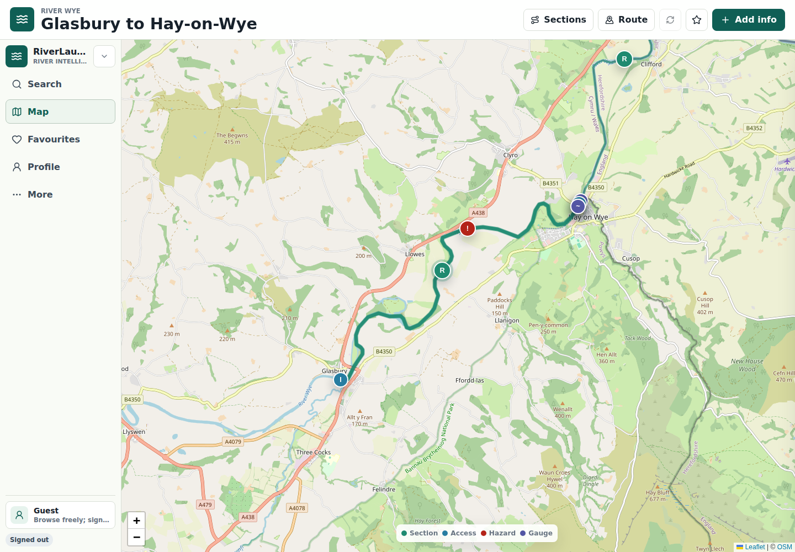
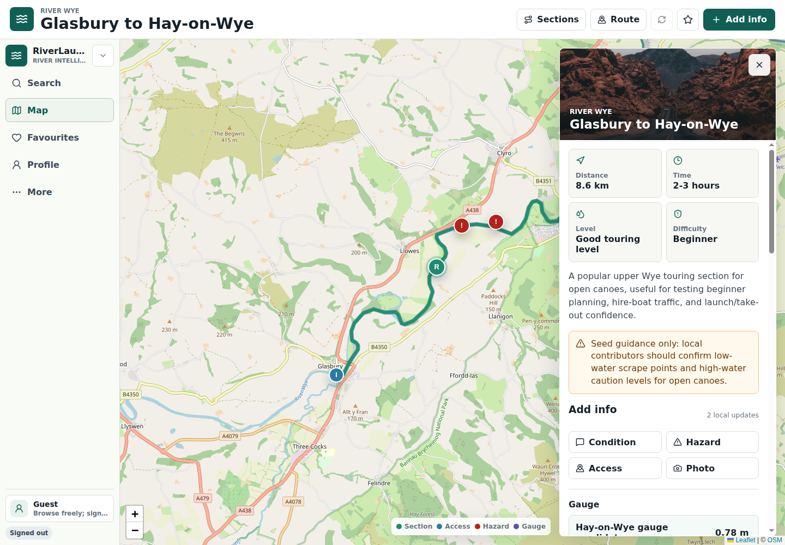
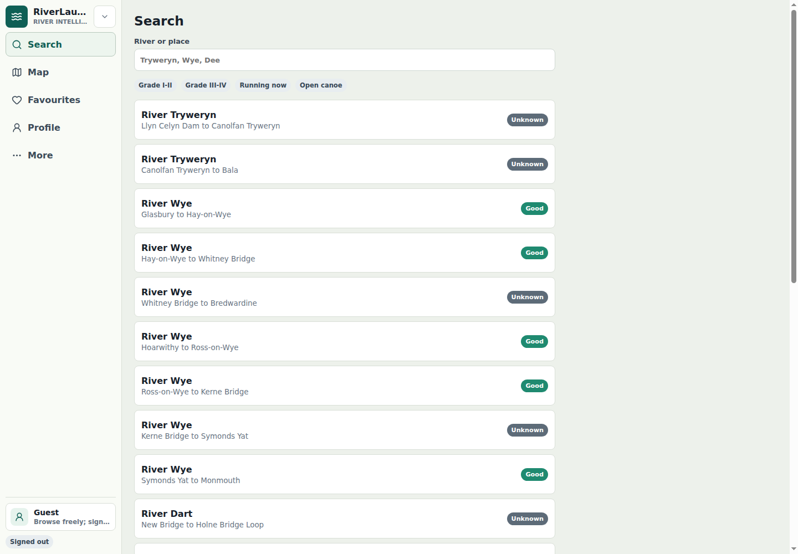
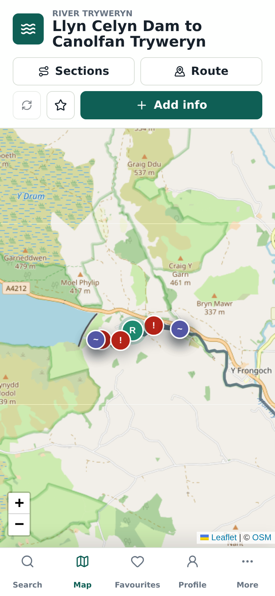

Section-first browsing
Routes, gauges, access points, hazards, features, and photos share the same map context.
Product
RiverLaunch.app combines map browsing, section pages, live level context, structured local knowledge, and contribution workflows for paddlers.




Routes, gauges, access points, hazards, features, and photos share the same map context.
Each river section can show put-in, take-out, distance, difficulty, suitability, reports, photos, and last-updated context.
Contributions are typed, date-stamped, attached to objects or locations, and available for confirmation or dispute.
Preview only
This is the preview environment for the product shown in these screenshots. Content may be seed data or work in progress.